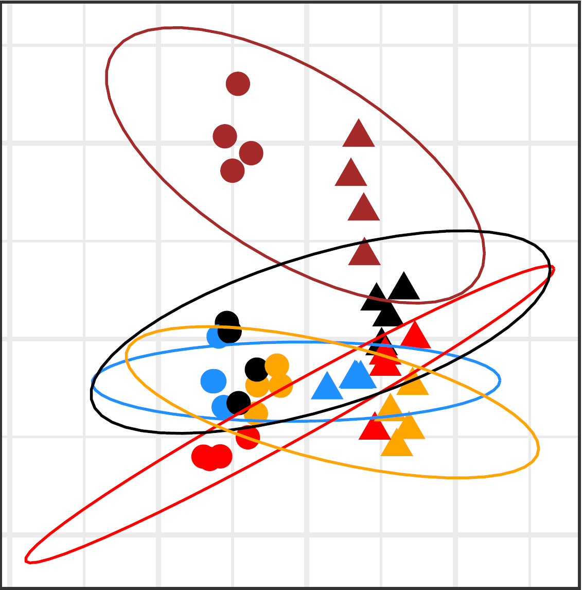
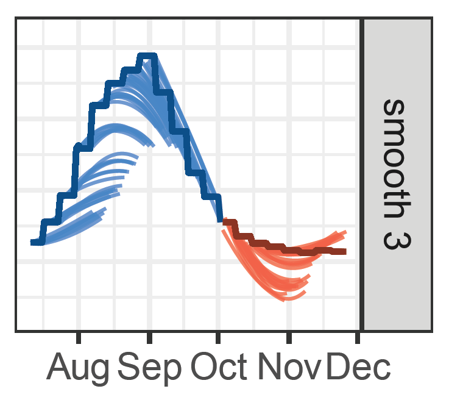
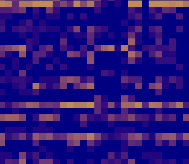
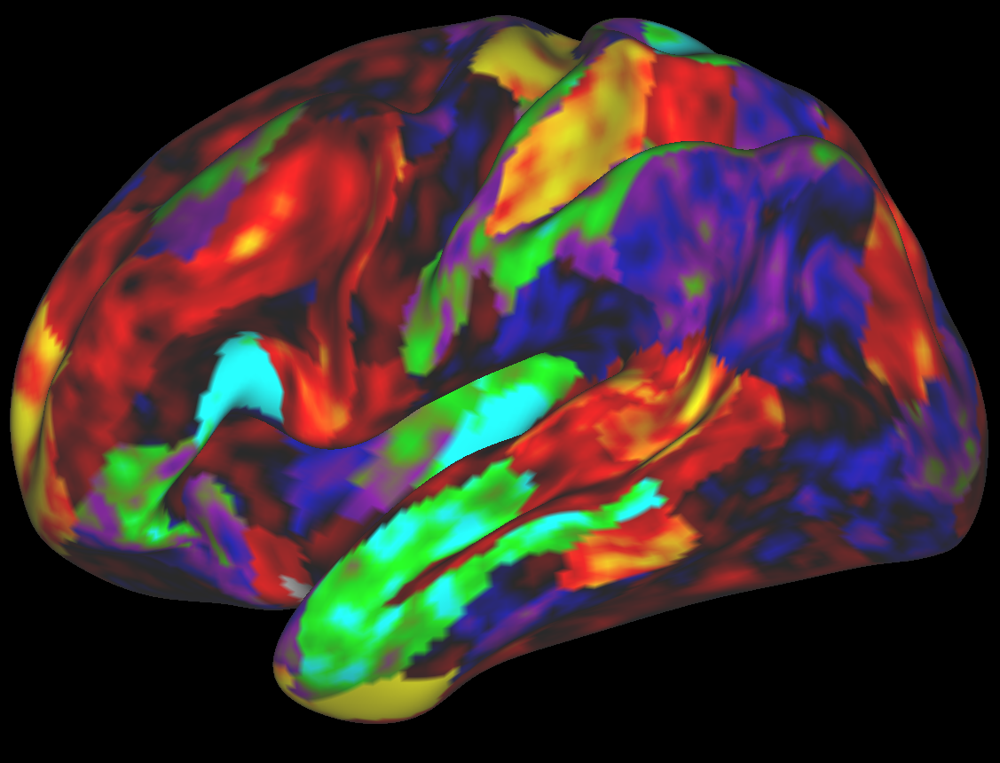
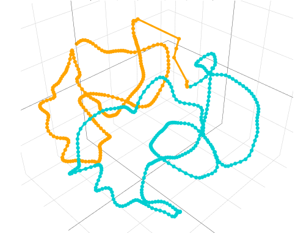
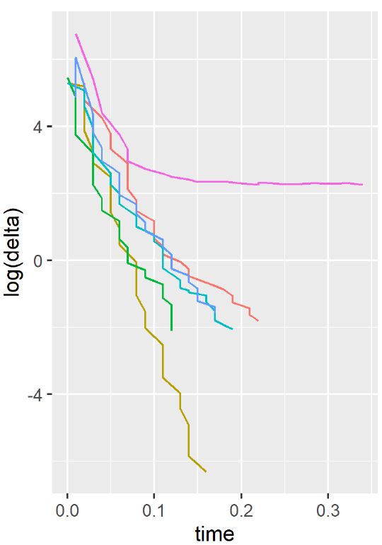
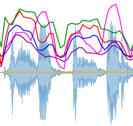
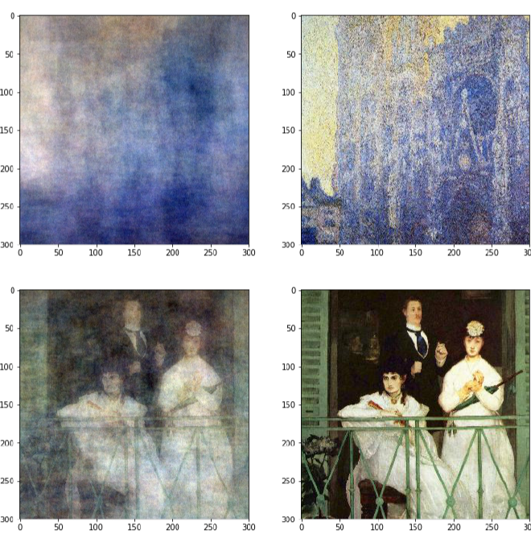
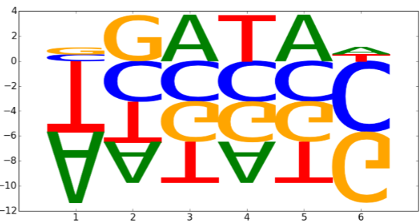
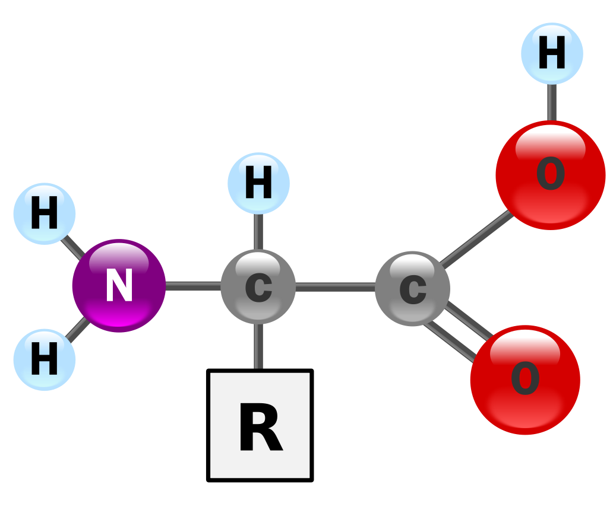

|
Research projects
Canonical correlation analysis as reduced rank regression
|
 |
2023 – 2024, University of Toronto, Toronto, Canada
Description: CCA is a well-established statistical method for analyzing relationships between two sets of variables and has been widely applied in various fields, ranging from neuroscience to economics.
However, the emergence of high-dimensional datasets presents significant challenges for traditional CCA frameworks, as traditional estimates of the canonical directions cease to be consistent.
We propose a novel approach that attempts to narrow the gap between theory and practice in high-dimensional CCA in the case where one dataset is high-dimensional and the other is not.
By incorporating concepts from reduced rank regression and sparse estimation, we are able to establish theoretical bounds for our procedure, ensuring statistical rigor while maintaining computational efficiency —
making it an attractive option for the analysis of large datasets.
Collabortors: Claire Donnat.
[Paper] [Slides]
|
Multi-period forecasting
|
 |
2021 – 2022, Stanford University, Stanford, USA
Forecasting methodologies have always attracted a lot of attention and have become an
especially hot topic since the beginning of the COVID-19 pandemic. In this paper we consider
the problem of multi-period forecasting that aims to predict several horizons at once. We
propose a novel approach that forces the prediction to be “smooth” across horizons and
apply it to two tasks: point estimation via regression and interval prediction via quantile
regression. This methodology was developed for real-time distributed COVID-19 forecasting.
This project was sponsered by Stanford Data Science Institute.
Collaborators: Trevor Hastie, Rob Tibshirani and
Delphi Research group.
[Paper] [Slides] [Code]
|
Weighted low rank matrix approximation
|
 |
2020 – present, Stanford University, Stanford, USA
Description: Low-rank matrix approximation is one of the central concepts in machine learning,
with applications in dimension reduction, de-noising, multivariate statistical methodology, and many more.
A recent extension to LRMA is called low-rank matrix completion (LRMC).
It solves the LRMA problem when some observations are missing and is especially useful
for recommender systems. In this project, we consider an element-wise weighted generalization of LRMA.
WLRMA has many applications. For example, it is an essential component of GLM optimization algorithms,
where an exponential family is used to model the entries of a matrix, and the matrix
of natural parameters admits a low-rank structure.
Collabortors: Trevor Hastie.
[Paper] [WLRMA package]
|
Canonical correlation analysis with structured regularization
|
 |
2020 – 2022, Stanford University, Stanford, USA
Description: Canonical correlation analysis (CCA) is a technique that allows to measure the
association between two multivariate sets of variables.
The regularized modification of canonical correlation analysis (RCCA)
is widely used to conduct the analysis of high dimensional data.
One limitation of RCCA is that it treats all features equally.
In this project we introduce several modifications of RCCA utilizing
the underlying data structure and
suggesting some tricks that allows to avoid excessive computations
while conducting CCA with regularization.
Collabortors: Trevor Hastie and Leonardo Tozzi.
[Paper] [RCCA package] [Slides] [Poster] [Video]
|
Chromatin conformation reconstruction
|
 |
2018 – present, Stanford University, Stanford, USA
Description: Three dimensional (3D) genome spatial organization is critical for numerous cellular processes.
Genome architecture had been
notoriously difficult to elucidate, but the advent of the suite of
chromatin conformation capture assays, notably Hi-C, has transformed
understanding of chromatin structure and provided downstream biological insights.
In this project we target finding a chromatin spatial conformation.
We exploit the fact that single chromosome solutions constitute a one dimensional (1D) curve in 3D.
The resulting technique thereby combines principal curve methodology with the metric scaling approach.
Collabortors: Trevor Hastie and Mark Segal.
[Paper 1] [Paper 2] [DBMS package] [PoisMS package] [PoisMS vignette] [Slides] [Poster] [Video]
|
The Human Connectome project
Course projects
Weighted low rank matrix approximation
|
 |
2020, Stanford University, Stanford, USA
Description: The low-rank matrix-completion (LRC) problem has always
attracted a lot of attention. One of the most famous applications
can be found in Netflix Problem, which aims to build a movie
recommendation system based on partial user's movie ratings.
The general LRC problem statement is: given some incomplete matrix
find a low-rank matrix that provides the best approximation
to its observed entries.
In this project we consider the generalization of LRC problem
introducing weights in the problem set-up and stating
the weighted low rank matrix approximation (WLRA) problem.
We suggest several optimization algorithms solving this problem
and compare them in terms of convergence.
Course: Convex Optimization II (EE364B).
[Report]
|
Early Detection of COVID-19 from Cough Sounds
|
 |
2020, Stanford University, Stanford, USA
Description: As of June 12th 2020, there have been 7,739,944 cases and 428,337 deaths
as a result of the COVID-19 pandemic as per the World Health Organization COVID-19 Dashboard.
The countries around the world have imposed restrictions in the form of the lockdown to combat
the rate of the spread and flatten the curve describing the number of patients admitted to hospital per day.
Currently most of governments are planning their post-lockdown reopening procedures and methods
to monitor the spread of the disease. However, limited tested capabilities, varying quality of the tests,
and a large number of asymptomatic carriers make
this task particularly challenging.
In this project we attempt to build a classifier to diagnose
the patient based on the cough recording and general patient information
collected by the hospital staff. The data was provided by the Wadhwani Institute of
Artificial Intelligence.
Course: Data science and AI for COVID-19 (CS472).
[Report]
|
Art Nouveau style transfer with face alignment
|
|
2019, Stanford University, Stanford, USA
Description: Flourished throughout Europe and the United
States at the turn of 19th and 20th centuries, Art
Nouveau still remains one of the most beautiful
decorative art movements. Promulgating the
idea of art and design as part of everyday life and
inspired by natural forms and patterns of plants
and flowers, it has influenced different aspects
of art and architecture, such as interior, furnishings
and glass design, as well as graphic work,
posters, and illustration. This project inspired by
Henri de Toulouse-Lautrec and Alphonse Mucha
works of art is aimed to develop a deep learning
tool transforming already boring photos into
a bright and bold Art Nouveau fine art posters.
Course: Deep Learning (CS230).
[Report] [Poster]
|
Monet is spot, Manet is people
|
 |
2018, Stanford University, Stanford, USA
Description: It takes some time for a human being to conceive the differences between two of the most well-known
impressionist painters Claude Monet and Edouard Manet. Although quite cultivated the French beau
monde of the nineteenth century had a struggle with this problem as well. When Claude Monet made his
debut at the salon in Paris in 1865, his landscapes were displayed next to the famous painting “Olympia”
by Edouard Manet who was already known at the time. Funnily enough, people could not recognize the difference between the paintings of these two artists.
Could the machine do better?
Course: Machine Learning (CS229).
[Report] [Poster]
|
Imputing chromatin landscape from a single essay
|
 |
2018, Stanford University, Stanford, USA
Description: Chromatin landscapes provide critical insight into the transcriptional regulation of
the genome. Current approaches for profiling chromatin landscape require
multiple high-throughput sequencing assays, creating the desire for a single
cost-effective assay. Here we assess the ability of nascent transcription assay -
Global Run-On and sequencing (GRO-seq) and Precision Run-On and
sequencing (PRO-seq) – to impute H3K4me3, H3K27ac, H3K27me3, and
DNase-seq using XGBoost, Dense Neural Network, and Convolutional Neural
Network models.
Course: Deep Learning in Genetics (CS273B).
[Report]
|
Other projects
Dimension reduction methods in myeloma studies
Automatic organization of translation workflow
|
|
2015 – 2017, SmartCAT, Moscow, Russia
Description:
The main goal of the project can be stated as follows. Given the complete information about translators
in a marketplace such as average translation pace (words per hour), translation price (cents per word), customer feedbacks
and customers rating, texts of the projects translated along with translation mistakes made (detected automatically
by system or manually by reviewer or corrector) find the most efficient translator for the new project. By efficiency of the translator
we imply that such translator would meet time and price restrictions imposed by the customer and would
produce the translation of the highest possible quality.
This project was funded
by Skolkovo Innovation Center grant.
[Patent]
|
Amino acids spatial structures
|
 |
2014 – 2017, Moscow State University, Moscow, Russia
Description:
In this project the geometry of polypeptides is investigated by means of geometrical and statistical methods.
One part of this project is devoted to the analysis of the information contained in Protein Data Bank. In particular,
we have tested several characteristics (such as covalent bonds lengths and angles, cis–trans isomerism or Pauling plane low)
of PDB conformations for consistency and general theory fitting.
The second part is focused on geometrical modeling of polypeptides. We consider several approaches
to polypeptides modeling (e.g by a polygonal chain with fixed edge lengths or by a smooth curve) and investigate
folding properties of the suggested models.
This project was funded by
Russian Science Foundation grant.
Collaborators: Faculty of Biology of Moscow state University.
[Paper]
|
|